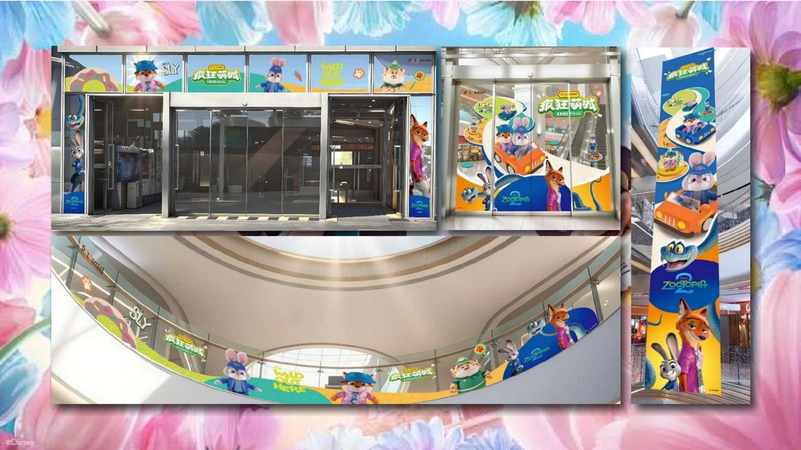
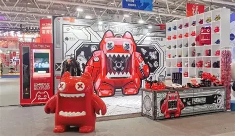

品牌与 IP 匹配
结合品牌定位、IP 调性与目标人群，找到合作方向与市场切入点。
FOCUX / COMMERCIALIZATION
02 — BRAND & BUSINESS把 IP 的文化价值，与品牌、产品和用户连接起来。
以完整的运营思路，探索更长远的品牌发展。
02 / FOCUX COMMERCIALIZATION
品牌结合 · 产品开发 · 渠道运营
从创意表达，到商业落地。


THE WAY WE CONNECT
OBM + C2M
品牌运营与用户需求相结合。
结合品牌定位、IP 调性与目标人群，找到合作方向与市场切入点。
围绕品类与使用场景开展设计开发，结合柔性生产与供应链管理。
连接线上线下销售场景，结合渠道管理、分销与体验推进市场运营。
通过体验、服务及用户连接，让品牌表达延续到持续的互动中。
LOOKING AHEAD
发展规划 · 品类布局
以品牌为核心的长期探索。